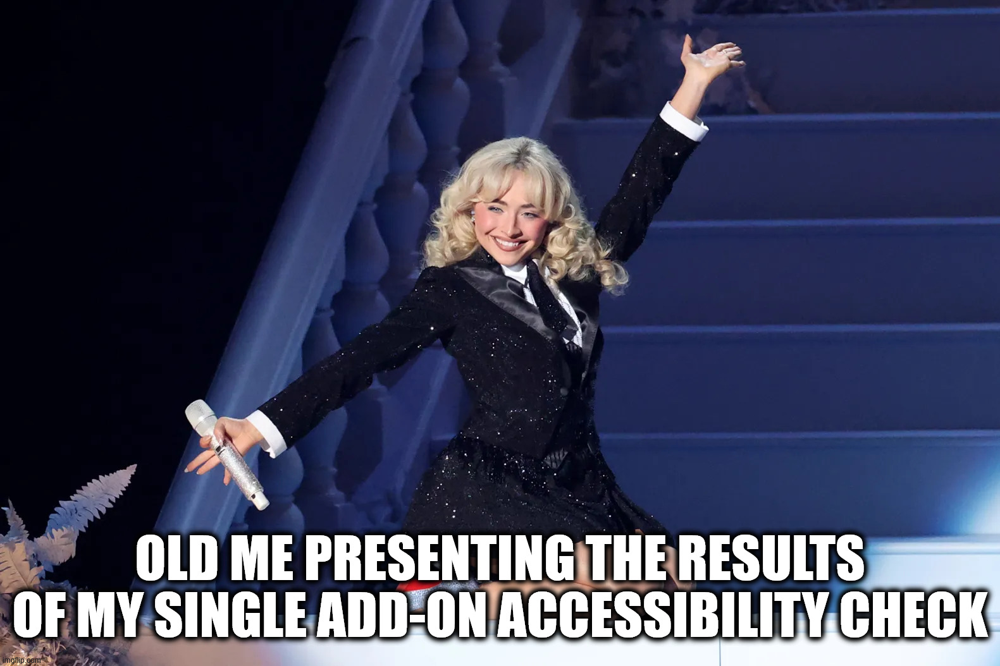
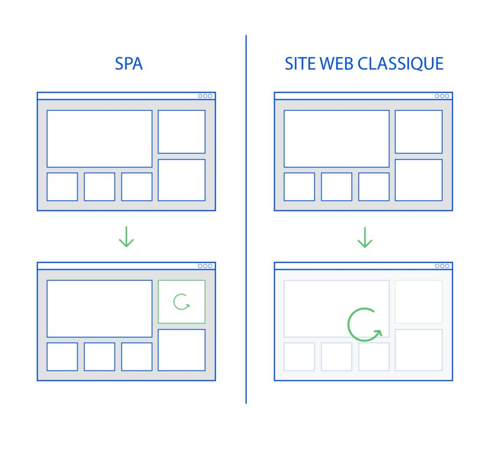
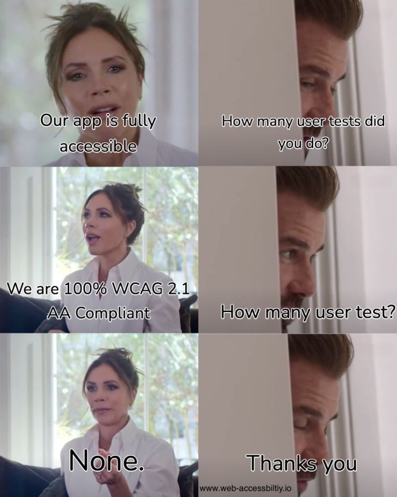
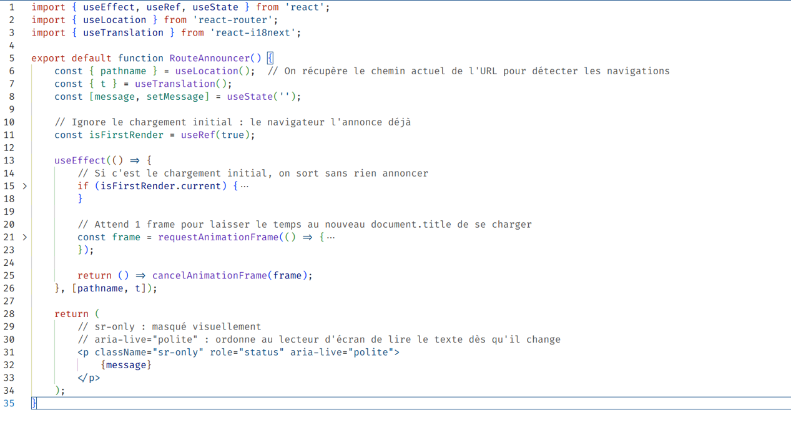
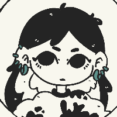

*Web Content Accessibility Guidelines
WCAG*nnn
Ce que j'ai appris
sur la réalité du web accessible.
Interface3 · septembre 2026
Ce que je croyais savoir

Une SPA, c'est quoi ?
Une seule page dont on remplace le contenu à la volée. Des composants apparaissent et disparaissent, sans que la page ne se recharge jamais.

Ce que les tests révèlent
NonVisual Desktop Access (NVDA)

Sur un App React …
chat.maite.tech (nouvelle fenêtre)scr/a11y/RouteAnnouncer.jsx
RouteAnnouncer

Démo 2 : Le Piège du Focus Perdu
Quand un bouton disparaît sous le curseur
Démo 2 : Le Piège du Focus Perdu
Focus Rescue : Rétablir le Fil
Démo 3 : Gestion des langues
L'Attribut lang=" "
Merci
💗💖💕💗
💘💞💖💕
